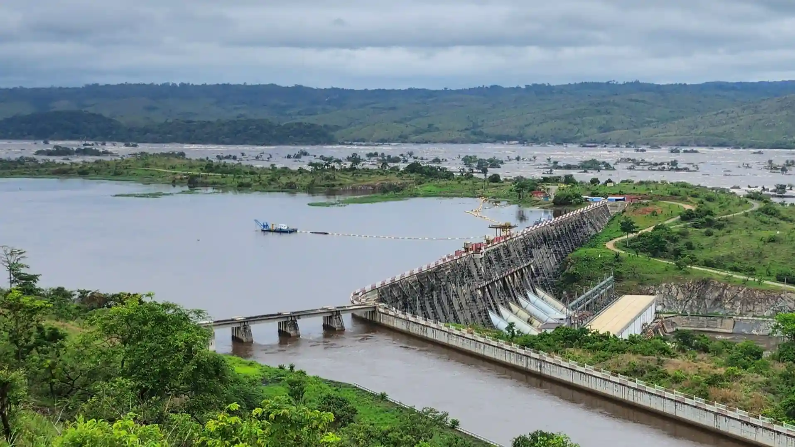
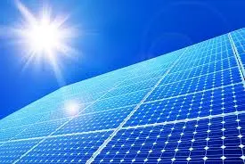
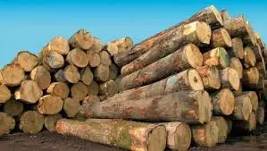

Energy Sources
Discover the diverse renewable energy resources of the Democratic Republic of Congo
💧 Hydroelectric Power

The Congo River is the world's second-largest river by flow volume, offering unparalleled hydroelectric potential. The Grand Inga Dam project alone could generate up to 40,000 MW - enough to power half of Africa. Currently, only a fraction of this potential is being utilized.
- Potential capacity: 100,000+ MW across the country
- Current utilization: Less than 5%
- Key project: Inga I, Inga II, and planned Inga III
☀️ Solar Energy

Located in the tropical zone, DRC receives consistent sunlight throughout the year with an average solar irradiation of 5-6 kWh/m²/day. Solar energy is ideal for rural electrification and off-grid communities.
- Annual solar hours: 2,500 - 3,000 hours
- Best regions: Eastern and southern provinces
- Application: Rural health centers, schools, and homes
🌿 Biomass Energy

DRC's vast tropical forests and agricultural lands provide significant biomass resources. Sustainable biomass can generate energy while reducing waste and creating rural jobs.
- Resources: Agricultural residues, forest waste, organic municipal waste
- Benefits: Waste reduction, rural development, carbon neutral
- Potential: 1,000+ MW from agricultural residues alone